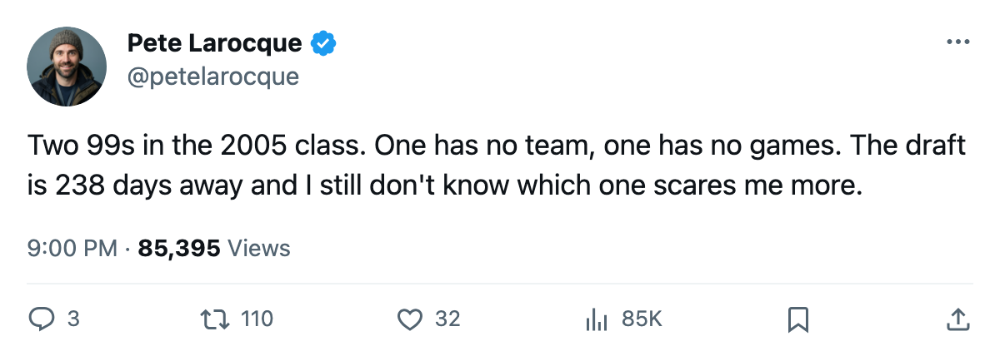
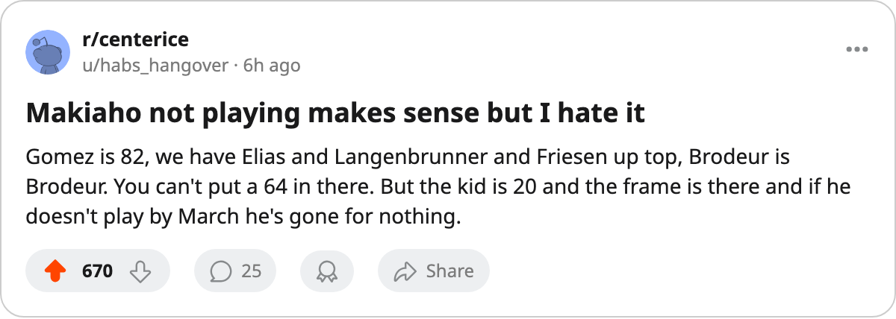

Newark Has a 99 on Its Roster. He Has Played 0 Games.
Petri Makiaho, #89 overall, carries the same potential grade as the draft's best player. The Devils have not put him on the ice.
 Pete LarocqueScouting editor · The Prospect File
Pete LarocqueScouting editor · The Prospect File
Petr Beier went #8 in June with a 99 potential and still has no sweater. Eight days into the season, that story is the one everybody tells. Here is the other 99 from the 2005 draft. Petri Makiaho66 went #89, round 3, to  New Jersey Devils. He is on the roster. He has played 0 games.
New Jersey Devils. He is on the roster. He has played 0 games.
Same grade. Two different ways to get it stranded.
Makiaho is 20, born 1985-04-29, 77 inches and 224 lbs, a left-shooting center. The Book has his base at 67, and his overall today reads 64 with 0 movement on the Development Index. His potential is 99. His contract costs $0.89M and runs 1 year. He is on a rookie deal.
The Devils' depth chart buries him
New Jersey Devils opened the season 1-0-0, beating its first opponent 3-1. Makiaho sat. The center he plays behind is  Scott Gomez84, graded 82. Ahead of Gomez on the wing sit
Scott Gomez84, graded 82. Ahead of Gomez on the wing sit  Patrik Elias88 and
Patrik Elias88 and  Jamie Langenbrunner88, both at 86.
Jamie Langenbrunner88, both at 86.  Martin Brodeur97 is 95 in goal. NJ is a contender, not a rebuild, and there is no reason to put a 64-overall rookie at center.
Martin Brodeur97 is 95 in goal. NJ is a contender, not a rebuild, and there is no reason to put a 64-overall rookie at center.
The Junior Bureau's grades on Makiaho tell you where the 99 comes from and where it does not. His puckhandling reads 77, his positioning 79, his deking 71, his passing 70. Those are real tools for a 20-year-old. His checking is 50. His faceoffs are 50. His heroism is 50. A center who cannot win a draw, cannot separate a winger from the puck, and does not go into a corner is not going to skate in front of Brodeur in a playoff series.
The frame is there. 77 inches, 224 lbs. That is a man who can fill out into a power forward if the checking number climbs from 50 into the 70s. Pete Larocque has seen a lot of big young centers with 50s in the checking column and 90s in potential, and most of them never close the gap.
The 2005 class, two 99s, two empty stat lines
Beier and Makiaho carry the only 99-potential grades in the 2005 draft. Beier went first among them (#8, unsigned, no team, no contract). Makiaho went #89, signed, assigned, rostered. Neither has a single game in the column.
For Beier, the failure is organizational: the team that drafted him has not called. For Makiaho, the failure is competitive: he made the team, and the team is too good to need him yet.
The New Jersey Devils development path for third-round picks is not on record. What is on record: NJ holds 5 picks in the next 5 rounds, 1 first. The club traded away nothing this summer. It does not need to move Makiaho for a pick, and it does not need to dress him for a 1-0 start to the season.
| Player | Pick | Round | Potential | Overall | Team | GP this season | Status |
|---|---|---|---|---|---|---|---|
| Petr Beier | 8 | 1 | 99 | no grade | none | 0 | unsigned |
| Petri Makiaho | 89 | 3 | 99 | 64 | NJ | 0 | scratched |
What the Index says and does not say
The Development Index has him at 0. No rise, no fall. A base of 67, an overall of 64, which means the Index is 3 below base. That is not a crisis. One day of sampled form with 0 games played is noise.
What I watch: if the Index stays at 0 or below through December, that tells me the room does not trust him in practice. If it climbs, even 4 or 5, that means someone on the coaching staff is getting looks from the big center in morning skates and likes them. The 99 potential does not pay a dividend if it sits in the press box eating a program.
He turns 21 in April. That is still young for a center with 77-frame tools. It is not young enough to waste another season. The contract runs 1 year. If NJ does not dress him by March, he clears waivers as an unrestricted rookie and someone else gets the 99 for $0.89M. I have seen that movie. The 99 is a number. The 224 lbs of unfinished product is the asset, and someone else will dress him if the Devils don't.

